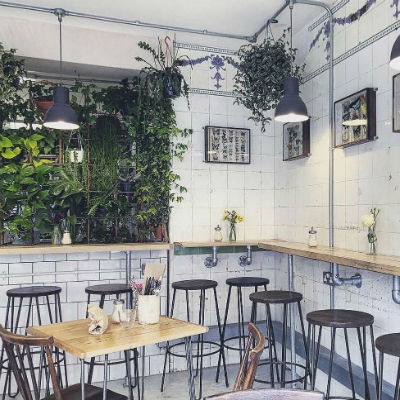
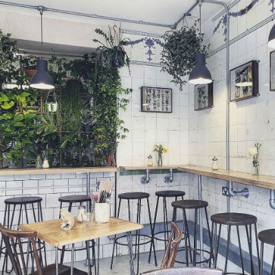

The Bristol Loaf
213 Church Road, Redfield, Bristol BS5 9HF
 

The Bristol Loaf is a café/bakery on Church Road. The café space is comprised of two relatively small rooms: the first houses the counter, and an impressive selection of sandwiches, cakes and pastries. The pastries in particular looked amazing (and huge!) and had me seriously regretting my decision to eat breakfast before I came. In this room, there are a couple of tables and a worktop that looks out onto Church Road – perfect for people watching (or procrastinating). In the second room, there are slightly more tables, plus a worktop that runs along two sides of the room. There is an inhouse bakery attached which means not only does the whole café smell incredible but you can also peek behind and see the bakers at work. White tiled walls, hanging shrubbery and large windows makes the café feel very light and airy.
Price:
- Americano: £2.30
- Latte: £2.60
- English Breakfast Tea: £2.30
- + almond and oat milk available at no extra cost.
Wifi: Available. Ask at the counter for the password.
Plugs: There are only four double socket plugs that run under the countertop in the second room. That said, I stayed from 11am-1pm and it was quiet enough that there was little competition for them.
Music: None
Notes - The Bristol Loaf is closed on Sundays and Mondays!